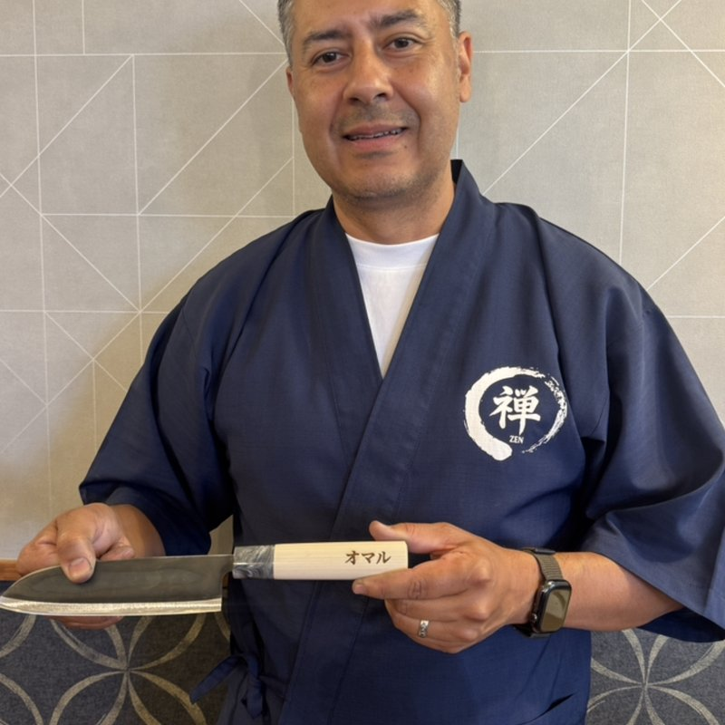
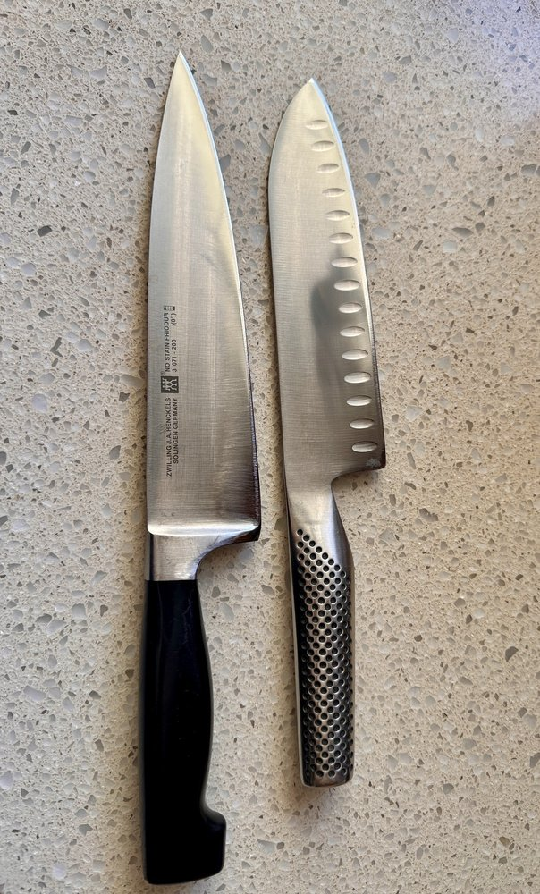
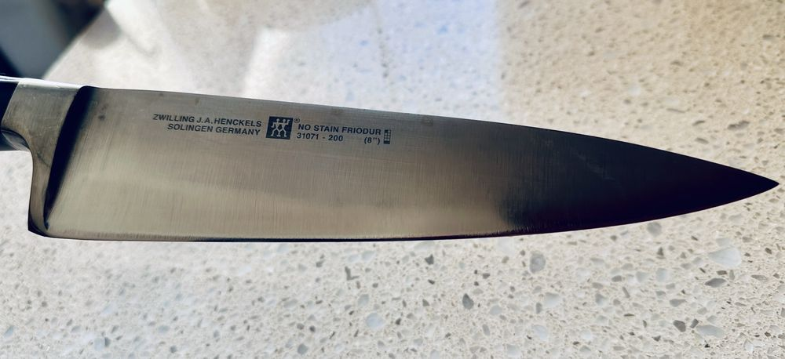
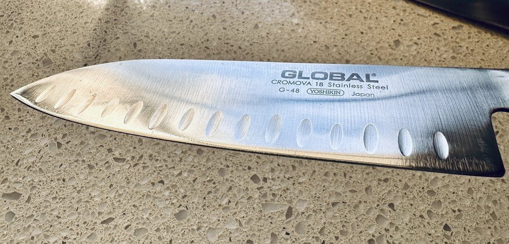

Accusharp Cutlery Service sharpens your kitchen's own knives on-site, on a schedule that fits your prep. Weekly, bi-weekly or monthly routes across Los Angeles and Southern California, run by the same sharpener since 2004.
A dull knife slows the line and slips. We come to your kitchen on a set schedule, sharpen everything on-site, and your cooks go back to work with the knives they already know.
We schedule around service: usually prep hours (9am-11am) or the afternoon lull (2pm-4pm), or before first prep if that suits you better. Every knife gets a full bevel restoration and finish strop, with an edge warranty.
Omar has run Accusharp Cutlery Service since October 2004 and still runs every route personally. As an authorized Victorinox and Messermeister dealer, we can also bring new knives when your kitchen needs them.

Every edge gets a full bevel restoration and finish strop.




A few of the professional kitchens on our routes.
One schedule, one point of contact, one invoice.
From a single dining room to a group of locations. We keep the line's knives sharp on a weekly, bi-weekly or monthly cycle.
High-volume knives that see heavy use every day. We fit the route to your schedule, whether that's a shop counter, a catering kitchen or a truck.
Hotel kitchens, banquet operations, stadiums, studio commissaries and private clubs. Several outlets, one route and one invoice.
One call gets your kitchen on a route.
Tell us roughly how many knives you run and how often you want visits. We give you a per-visit number.
Weekly, bi-weekly or monthly, at a time that stays clear of service.
Every knife sharpened in your kitchen and handed back the same visit. One invoice per account.
"Never a Dull Moment"
Call or text for a commercial quote. We confirm within 24 hours.